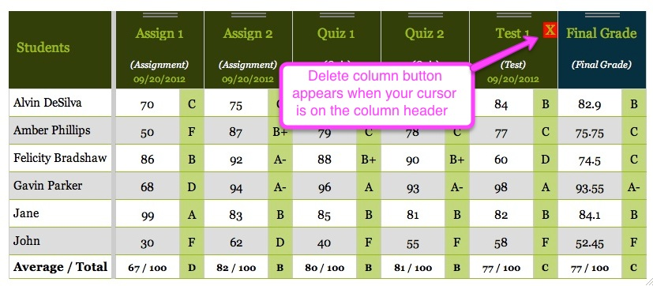
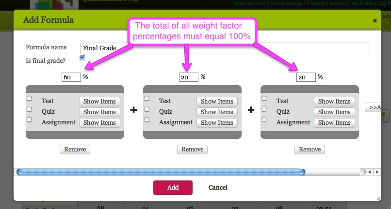

Gradebook (by ksurkan)
Summary/Accessing the Gradebook/ Adding Grades to the Gradebook /Editing Gradebook Settings / Calculating GradesSummary
The Gradebook is a secure, simple and convenient way to record and track grades, allowing administrators, teachers, students and their parents to get a quick and accurate picture of student performance in a given class. This chapter explains how to access the Gradebook, how to add columns and grade entries, how to edit Gradebook settings to amend the grading scale, and how to add formulas to calculate final grades.
A video tutorial for teachers giving an overview of the Gradebook and how to utilize its main features can be viewed in
two parts, as follows:
QuickSchools Tutorial - Gradebook Overview for Teachers, Part 1
QuickSchools Tutorial - Gradebook Overview for Teachers, Part 2
QuickSchools Tutorial - Gradebook Overview for Teachers, Part 1
QuickSchools Tutorial - Gradebook Overview for Teachers, Part 2
Accessing the Gradebook
Accessing the Gradebook is easy! Simply click on the Gradebook feature in the green border at the top of the screen.When you do so, the Gradebook page appears as follows:

It is possible to maximize the Gradebook window by clicking on the Maximize icon, which looks like this:
 at the top right-hand corner of the page. Now you are ready to add and calculate grades!
at the top right-hand corner of the page. Now you are ready to add and calculate grades!Adding Grades to the Gradebook
Course Selection
First, select the course you wish to work on from the dropdown menu under Subject:

Enrolled students should appear in the Students column on the left-hand side of the Gradebook.
Adding Assignment Columns to the Gradebook
To add columns of assignments for grade entries, simply click on the Add Column button

or press Ctrl-A
This will bring up an Add Column popup box that looks like this:
Name the column and select a Category (such as Assignment, Quiz, or Test) for the item you are grading. Total marks for each assignment default to 100, but may be modified to reflect different point totals for individual assignments.
Click on the red Add button
 at the bottom of the box and your column will be ready to accept grade entries!
at the bottom of the box and your column will be ready to accept grade entries!Deleting Assignment Columns from the Gradebook
To completely delete an entire column from the Gradebook, mouseover the dark green header at the top of the column you wish to remove. A small red box containing an X will appear on the right-hand side of the header, as shown below:

Clicking on this red box will permanently eliminate the column and its grades from your Gradebook.
Entering Grades in the Gradebook
Enter numeric grades for each student by typing directly into the box next to the student's name. Don't forget to click the Save button
 or press
Ctrl-S to save your grade entries! The Gradebook will automatically calculate the letter grade according to the scale you have set under Gradebook Settings, and
calculate the class average grade for the assignment at the bottom of the column for easy reference, as shown in this sample:
or press
Ctrl-S to save your grade entries! The Gradebook will automatically calculate the letter grade according to the scale you have set under Gradebook Settings, and
calculate the class average grade for the assignment at the bottom of the column for easy reference, as shown in this sample:
Displaying the class average and letter grades associated with numerical grade entries can be toggled on and off using Edit Gradebook Settings. Non-numeric grade entries can also be made according to the following legend, which also appears on the Gradebook home page:

The Legend can be customized to include more grading options using the Grading Setup feature in the green bar at the top of the Gradebook home page.
Entering Comments about Student Performance
Comments about each student's performance on the assignment may be added by clicking on the comment icon

in the lower right-hand corner of the scoring box for that student, which appears when you mouseover the box.
This will bring up an Edit Comments popup box that looks like this:
The Comments box is configured to accept public comments visible to the student and his or her parents, and also private comments visible only to teachers. Enter your comments in the appropriate box and click on the red Save Comments button
to save your comments and exit the popup box.
Editing Gradebook Settings
To change the grading scale and make other setting changes to the Gradebook, enter the Edit Gradebook Settings feature by clicking on this icon

in the upper right-hand corner of the Gradebook screen.
This will bring up an Edit Gradebook Settings popup box that looks like this:
Editing Display Preferences: Letter Grades and Class Averages
You may toggle the display of letter grades and class averages on (or off) by checking the appropriate boxes at the top left of the Edit Gradebook Settings screen

and then clicking on the red Save button
Editing Display Preferences: Gradebook Column Order
The order in which columns appear in the Gradebook can be modified to appear by date, by column name, by category, or you can choose to manually configure their layout by selecting the appropriate choice on the Edit Gradebook Settings screen

and then clicking on the red Save button
Selecting Manual control enables you to rearrange the order by dragging the columns horizontally into their desired location on the main Gradebook screen.
Creating A New Grading Scale
If you need different grading scales for different courses or assignments, you can create and name unique scales by clicking on Create New Scale on the Edit Gradebook Settings popup screen.
This will bring up a New Grading Scale popup box that looks like this (here we have filled in the template with a sample scale for an Honors class):
You can name and describe the new grading scale and change the numeric values associated with each letter grade by filling in the fields with new numbers, and then clicking on the OK button:

To add rows to the grading scale (enabling plus and minus grades, for example), simply click on the Add Row button

in the New Grading Scale popup box. The new row will appear at the bottom of the scale, like this:
By re-entering values in the table and clicking on the OK button
now we have transformed the new row into a category for an A- grade, as shown below:
Customizing A New Grading Scale
If you want to make changes to an existing grading scale, you can also do this from the Edit Gradebook Settings screen, by first selecting the relevant grading scale from the dropdown menu

and then clicking on the Customize grade scale link located just under the grade scale box:
This will bring up an Edit Grading Scale popup box that looks like this:
You can use this box to make changes to the numeric values for each grade in the scale, to add rows, or even to delete the grading scale entirely by clicking on the
 link on the right-hand side of the box. Be sure to click on the red OK button
link on the right-hand side of the box. Be sure to click on the red OK buttonafter making modifications to your grading scale in order to save the changes.
Calculating Grades
One of the most time-saving features of the Gradebook is its ability to calculate midterm and final grades. You can set up your Gradebook for each class so that each assignment, test, quiz, or other evaluation is appropriately weighted and factors into the calcuation of each student's midterm or final grade, which can then be displayed on the Gradebook screen. This allows the student and his or her parents to easily see how the student is doing in the class, and also enables them to track a student's progress in the course over time. The final grade is automatically transferred to their Report Card as well.

Calculated grade columns are easily distinguished from columns of grades for individual evaluations and assignments because they have dark blue instead of green headers. The values shown in these blue columns are automatically calculated according to percentages assigned to each test, quiz, or other form of assignment or evaluation given. Final letter grades are then given based on the selected grading scale for the class.
Adding a Formula to Calculate Grades
To add a formula for grade calculation, simply click on the Add Formula button

on the main Gradebook page. This will bring up an Add Formula popup box that looks like this:

Then fill in the formula name box and check the box to indicate whether or not this is a calcuation of the final grade for the course. If so, QuickSchools will automatically transfer the calculated final grade to the student's Report Card. For final grade calculations, you can set the weight factors by percentage to reflect the values in your syllabus.
To add weight factors to your grading formula, click on the Add Weight Factor button
This will add a gray weight factor box to your grading formula, as shown here:
You can add additional weight factors to the grading formula as needed, and then assign the desired percentage to each factor by checking the box next to the appropriate evaluation (e.g. test, quiz, assignment), then entering a numerical value in the percentage box above each gray weight factor box, and clicking on the Add button
The percentage total of all weight factors must equal 100, as shown in this example below utilizing three weight factors:

To further customize the grading formula, you may choose to individually select which instruments within the evaluation categories to count in grade calculation by using the Show Items button

to reveal them and check the appropriate ones. For example, if you gave three tests but only want to count the last two, you simply check the boxes next to those items, as shown here: